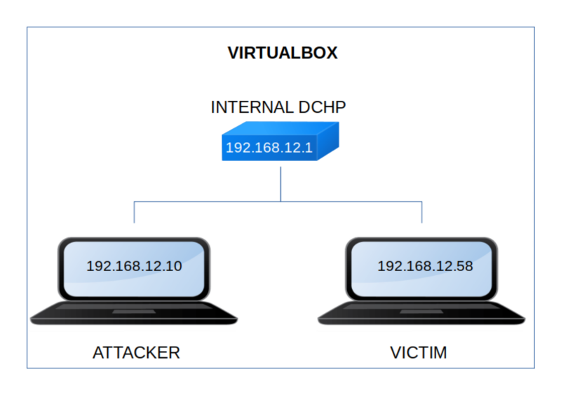

Juggling
▸ Juggling
▸ 1. Scan Network
▸ 2. Finding Services and Ports
▸ 3. Enumerate
▸ 3.1 php pseudo-protocol
▸ 3.2 How to get the session?
▸ 4. Exploitation
▸ 4.1 Get the first shell
▸ 4.2 Get user's privileges (First flag)
▸ 5. Privilege Escalation
▸ 5.1 Linpeas
▸ 5.2 Run the exploit
▸ 5.3 Get the second flag
Difficulty: Hard.
Flag: 2 flags.
Learning:
• Reconnaissance
Scan Network
Find services
• Enumerate
php pseudo-protocol
Get the session
• Exploitation
Get a shell
Get an user privileges
• Privilege Escalation
Enumerate system's information with “linpeas”
Bypass write permission
Escalate privilege through any suid binary
• Download (Mirror): https://downloads.hackmyvm.eu/juggling.zip
Install the machine on VirtualBox:
1. Download the file and extract it.
2. On Virtualbox choose File->Import Appliance.
3. Select the file “ova”.
4. Accept to import.

Watch your Machine IP.
$ ifconfig
Output:

Diagram
